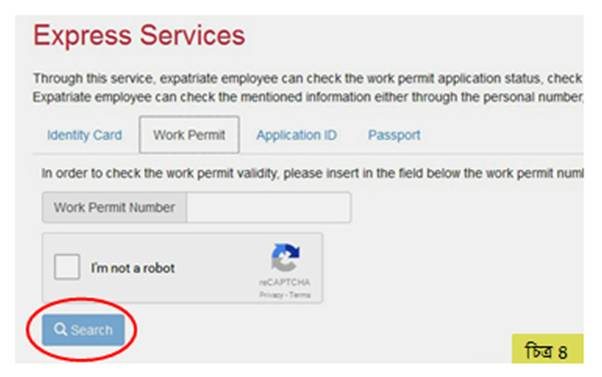
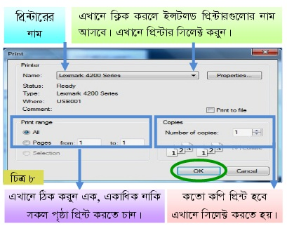

| রাষ্ট্রীয় নাম | : | কিংডম অফ বাহরাইন |
| স্বাধীনতা | : | ১৫ আগস্ট ১৯৭১ |
| সরকার | : | সাংবিধানিক রাজতন্ত্র |
| জনসংখ্যা | : | ১২ লক্ষ ৩৪ হাজার (২০১০ সালে) |
| মুদ্রা | : | দিনার (১ দিনার =২১৭ টাকা) |
| আয়তন | : | ৭০০ বর্গ কিলোমিটার |
| ভাষা | : | আরবী |
| ধর্ম | : | ইসলাম (৮১%) |
| প্রধান খাদ্য | : | ভাত, রুটি, ডাল, খেজুর |
| ফোন কোড | : | ৯৭৩ |
| প্রধান শিল্প | : | তেল, অ্যালুমিনিয়াম |
| সর্বোচ্চ তাপমাত্রা | : | ৪১০ সেলসিয়াস |
| রাজধানী | : | মানামা |
| উল্লেখযোগ্য শহর | : | আসামাহ, জানুবিয়াহ, মুহাররাক |
| বাংলাদেশ থেকে দূরত্ব | : | ৪,০০০ কিঃ মিঃ |
| বাংলাদেশের সাথে সময়ের পার্থক্য | : | ৩ ঘন্টা (-) |
| বাংলাদেশী অভিবাসীর সংখ্যা | : | ১ লক্ষ জন |
মানমা সিটি
ব্রাউজারের এ্যাড্রেস লেখার ঘরে http://portal.lmra.bh/english লিখে এন্টার চাপলে নিচের (চিত্র-১) পেজ আসবে।
উইন্ডোর ডান দিকে Employee লেখার উপর ক্লিক করতে হবে (চিত্র ১)। Employee লেখার উপর ক্লিক করলে একটি ড্রপ ডাউন মেনু আসবে (চিত্র ২)। এবার ড্রপ ডাউন মেনুর দ্বিতীয় আইটেম Express Services এ ক্লিক করুন।
Express Services এ ক্লিক করলে নিচের মতো একটি উইন্ডো আসবে । সেখানে Work Permit এ ক্লিক করতে হবে (চিত্র ৩)।
Work Permit ক্লিক করলে নিচের উইন্ডো আসবে (চিত্র-৪)। এখানে Work Permit Number লিখে I am not a robot লেখার পাশের চারকোনা ফাঁকা বক্সে ক্লিক করলেই একটি পপ আপ উইন্ডো আসবে যেখানে এক বিষয়ের (গাড়ি, ফুল, মাছ প্রভৃতি) ছর্বিগুলোর উপর নির্ভুল ভাবে ক্লিক করতে পারলে পপ আপ উইন্ডোটি চলে যাবে। তখন সার্চ বাটনে ক্লিক করলে ভিসাটি বৈধ কিনা জানা যাবে।
এখানে Work Visa Number এর ঘরে কর্মীর ভিসা নম্বর লিখে পাশের Search লেখা বাটনটি ক্লিক করতে হবে (চিত্র ৫)। তাহলে ভিসাটি বৈধ কিনা জানা যাবে।
এরপর Passport ট্যাব সিলেক্ট করলে উপরের নিচের মতো একটি উইন্ডো আসবে (চিত্র ৬)।
এখানে Print কর্মীর পাসপোর্ট নম্বর লিখতে হবে (চিত্র ৬)। Choose a Country লেখার ডান পাশের তিন কোনা ছোট কালো চিহ্নের উপর ক্লিক করলে দেশের নামের ড্রপ ডাউন মেনু আসবে। এখানে Bangladesh সিলেক্ট করুন। পূর্বের মতো I am not a robot লেখার পাশের চারকোনা ফাঁকা বক্সে ক্লিক করলেই একটি পপ আপ উইন্ডো আসবে যেখানে এক বিষয়ের (গাড়ি, ফুল, মাছ প্রভৃতি) ছর্বিগুলোর উপর নির্ভুল ভাবে ক্লিক করতে পারলে পপ আপ উইন্ডোটি চলে যাবে। তখন Search বাটনে ক্লিক করলে ভিসাটি বৈধ কিনা জানা যাবে। এটি প্রিন্ট করতে File এ ক্লিক করলে একটি ড্রপ ডাউন মেনু আসবে (চিত্র ৭)।
এখানে Print এ ক্লিক করলে চিত্র ৮ এর মতো একটি উইন্ডো আসবে। OK বাটনে ক্লিক করে প্রিন্ট করতে পারবেন।
আপনার কাছে কোন প্রিন্টার না থাকলে পেজটি সেভ করে রেখে পরে প্রিন্ট নেয়া যেতে পারে। পেজটি সেভ করার জন্য File মেনুর উপর ক্লিক করে Save Page As ক্লিক করতে হবে (চিত্র ৯)।
Save Page As এ ক্লিক করলে নিচের মতো একটি উইন্ডো আসবে (চিত্র ১০)। এখানে তিনটি বিষয় খেয়াল করতে হয়।
ফাইলটি পেন ড্রাইভে নিয়ে অন্যত্র Print করতে পারেন। পেন ড্রাইভটি কম্পিউটারে লাগিয়ে ফাইলের উপর মাউসের ডান বাটন ক্লিক করলে যে ড্রপ ডাউন মেনু আসবে। সেখানে সেন্ড টু এর উপর মাউস নিলে আর একটি মেনু আসবে (চিত্র ১১)।এখানে রিমুভেবল ড্রাইভ ক্লিক করলে ফাইলটি কপি হবে(চিত্র ১১)।